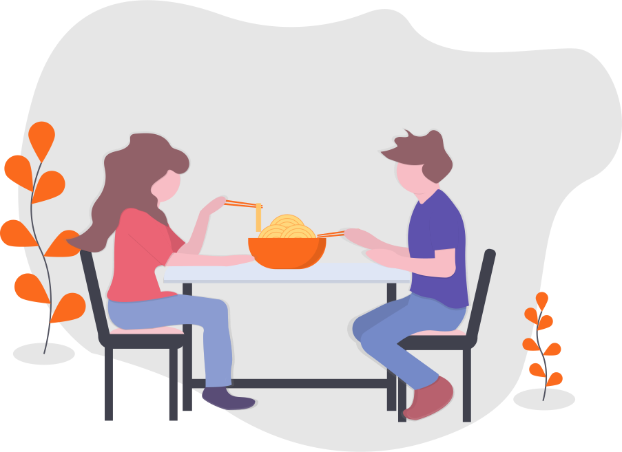
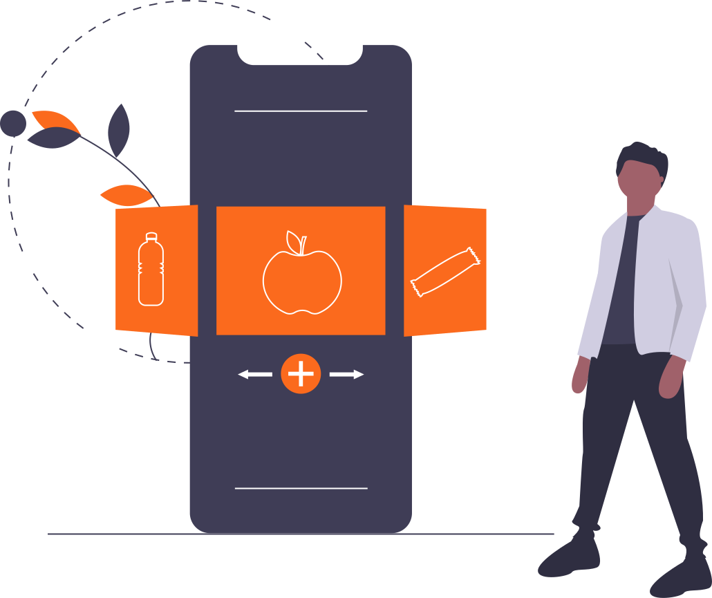

O CookCrawler é um software que visa ajudar você a preparar novas receitas apenas com os ingredientes que possui em casa!

Aqui você pode selecionar os ingredientes que possui no momento, e nós buscaremos receitas compatíveis para você!

Basta realizar o cadastro e você está pronto para se juntar à comunidade culinária e começar a cozinhar!